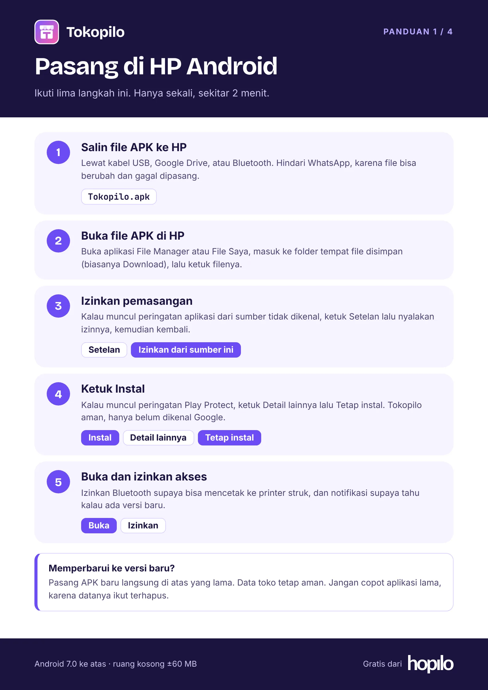
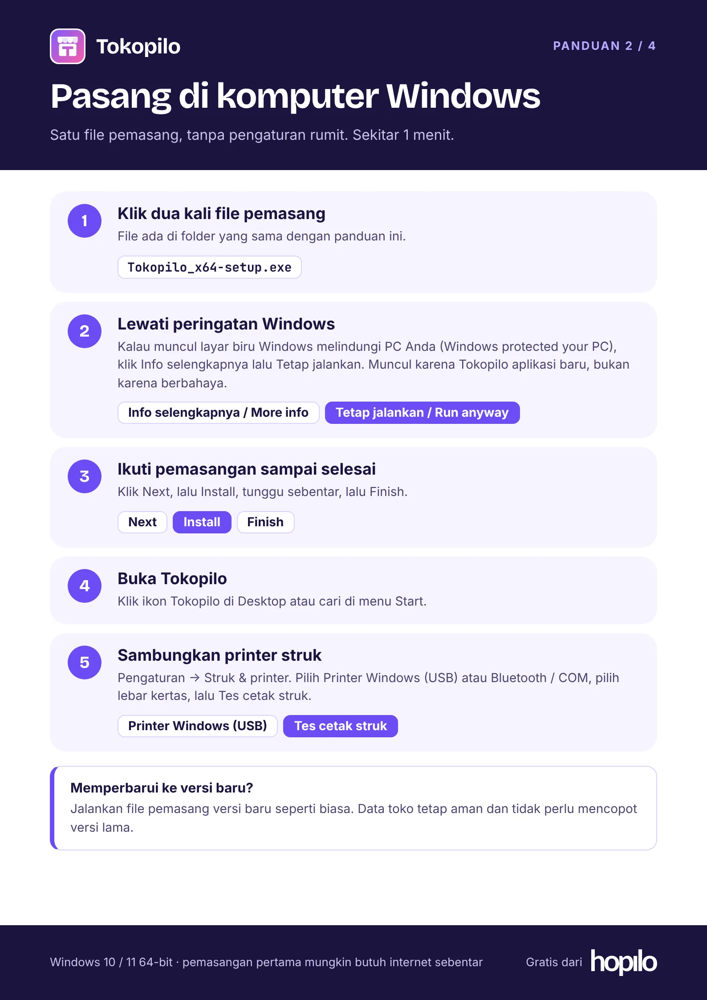
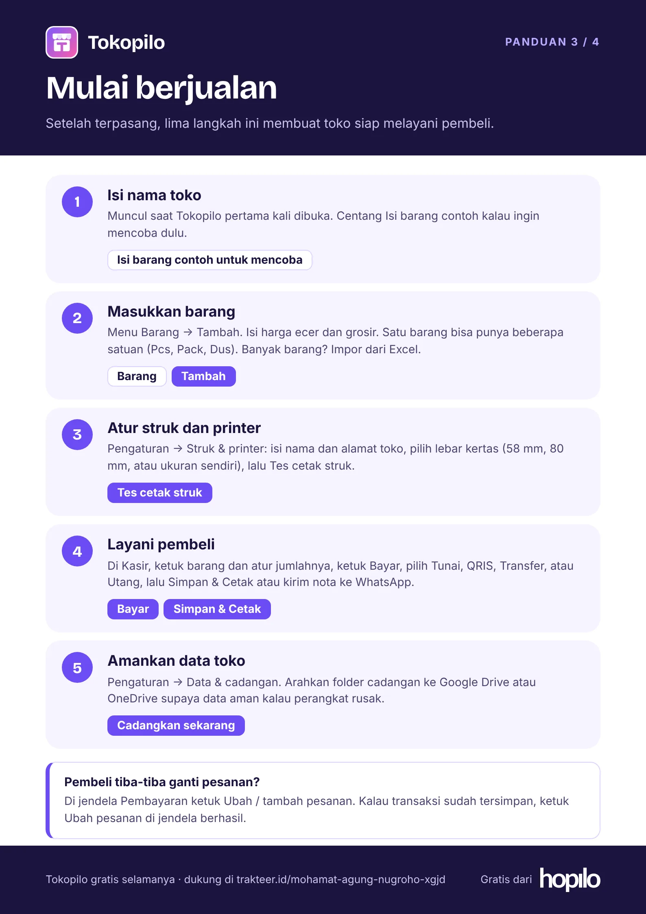
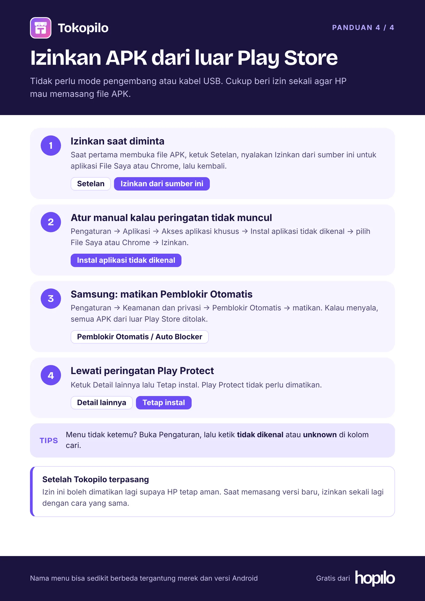

Cara pasang dan mulai pakai Tokopilo
Empat panduan singkat: pasang di HP Android, pasang di Windows, mulai berjualan, dan mengizinkan APK dari luar Play Store.
1. Pasang di HP Android
Sekitar 2 menit. Untuk update, pasang APK baru di atas yang lama.

2. Pasang di komputer Windows
Windows 10 / 11 64-bit. Sekitar 1 menit.

3. Mulai berjualan
Dari toko kosong sampai transaksi pertama.

4. Izinkan APK dari luar Play Store
Baca ini kalau HP menolak memasang file APK. Tidak perlu mode pengembang.

Masih gagal memasang? Pastikan file APK tidak dikirim lewat WhatsApp (bisa rusak), dan ruang kosong HP masih cukup. Belum punya Tokopilo? Unduh di sini.